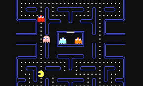

Pac-Man
Pac-Man is one of the most iconic games of all time it has sold nearly 48 million copies. By 1982 it had sold almost 400,000 thousand arcade cabinets and becoming a cultural phenominom. its simple yet addictive gameplay made it a timeless classic and itroduced us to one of the most iconic characters of all time
Donkey Kong
Donkey Kong is one of the most iconic arcade games of all time it helped launch Nintendo to the titan in the video game industry it is today. releasing in 1981 it introduced us to some of nintendos most iconic characters such as mario who at the time was called jumpman and of course the iconic donkey kong. The gameplay loop involed mario climbing on platforms to rescue to rescue pauline from donkey kong. By 1982 it had sold 60000 arcade cabinets in North America alone.
Space Invaders

Space invaders kicked off the golden age of arcade games releasing in 1978 by Taito. The gameplay consisted of players defending earth from waves of alien invaders. its simple gameplay made it a timeless classic of the shooter game genre. By the end of 1979 it sold over 750000 arcade cabinets
| Game | Release Year | Arcade Cabinets Sold | Total Copies (All Platforms) | Notable Facts |
|---|---|---|---|---|
| Pac-Man | 1980 | ~400,000 by 1982 | ~48 million | Cultural icon; introduced the “maze chase” genre. |
| Donkey Kong | 1981 | ~60,000 by 1982 (North America) | Millions across all releases | Introduced Mario (Jumpman); launched Nintendo’s arcade success. |
| Space Invaders | 1978 | ~750,000 by 1979 worldwide | Millions in ports and re-releases | Sparked the golden age of arcade gaming. |